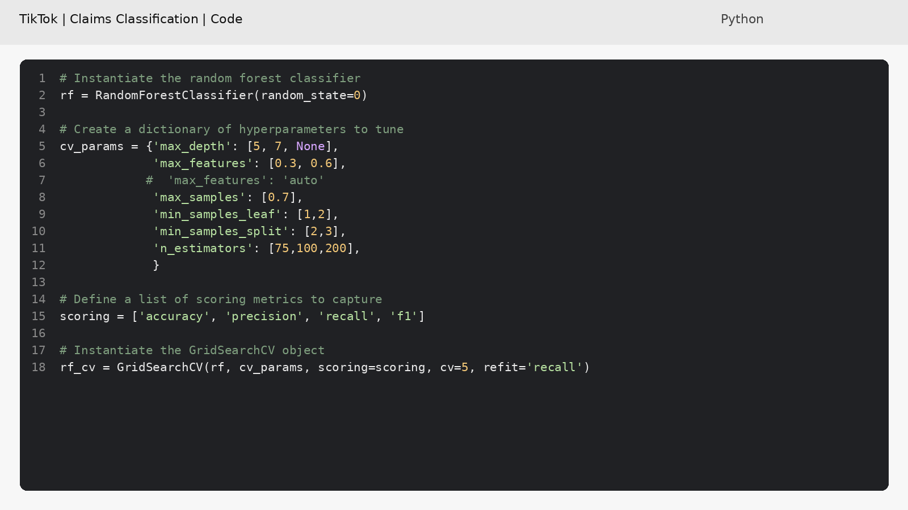

01 · Content classification case study
TikTok Claims
Claims versus opinion classification framed around moderation prioritization and human review.

Claims vs opinionstarget
Engagementstrong signal
Random Forestchampion model
Near-perfectholdout result
01 · The problem
Start with the question the client actually needs answered.
When large volumes of reported videos cannot all be reviewed manually, a classifier can help prioritize content that is more likely to need further review.
Key findingEngagement related variables were among the most predictive features. The Random Forest model was selected as the champion because it captured the target class strongly in the executed evaluation.
What this meansThe analysis suggests that a classifier could reduce the amount of content requiring equal manual attention by helping sort videos for downstream review.



02 · Evidence and approach
The technical work is here to support the answer, not replace it.
Random Forest was selected over the other tested approaches in the executed notebook because its validation and test performance were consistently strong, with the practical priority placed on capturing claims.
What I checkedData quality, exploratory patterns, evaluation behavior, and the evidence behind the main conclusion.
How I evaluated itModel selection and final reporting were separated from the held-out test results wherever the notebook workflow allowed.
Why it mattersThe result is interpreted in terms of what a client can do next, not only which algorithm scored highest.
03 · Final analysisKey findingEngagement related variables were among the most predictive features. The Random Forest model was selected as the champion because it captured the target class strongly in the executed evaluation. Business impactThe analysis suggests that a classifier could reduce the amount of content requiring equal manual attention by helping sort videos for downstream review. Recommended actionUse a classifier as a prioritization layer before human moderation, then evaluate the workflow on fresh data and monitor false negatives carefully because missed claims may be more costly than extra reviews.
What did the analysis actually answer?
This is the part a busy client can skim in 30 seconds.
Client takeaway
What I would want the client to remember.
The classifier can help prioritize reported videos for human review, especially when review capacity is limited. The unusually strong holdout result is a reason to validate on fresh data and monitor engagement distributions before trusting the model in production.
04 · Limitations and next steps
What the result can support, and what I would do next.
Limitations
The very high holdout performance should be treated cautiously. It is a portfolio result on an educational dataset and is not evidence of production generalization. A real system would require fresh data, drift monitoring, fairness checks, and moderation policy review.
What I would do next
- Add reporting history and author-level reporting signals if available.
- Validate the classifier on newer content and monitor performance drift.
- Measure the full moderation workflow, not just classification metrics.
Client takeaway
Use a classifier as a prioritization layer before human moderation, then evaluate the workflow on fresh data and monitor false negatives carefully because missed claims may be more costly than extra reviews.